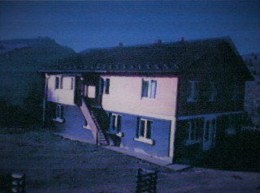

Замогильна загальноосвітня школа І-ІІ ступенів

У Замогилі проживав багатий житель, який володів землею, де знаходиться теперішня школа. Прізвище його Тонієвич Михайло Іванович. Це було за часів Румунії у 1922 – 1923 рр. Тонієвич Михайло виділив участок своєї землі для будівництва школи. Також він мав багато лісу на території своєї землі і вирішив виділити для побудови школи. Михайло Іванович приймав активну участь і був одним із робітників на будівництві школи. Бо був досвідченим майстром. По завершенню будівництва школа мала вигляд звичайної на той час сільської хати. I – III класи розміщувались в одній кімнаті і уроки проводив один учитель. Всього було 7 класів. За радянських часів Тонієвича Михайла Івановича виселили до Хабарського краю, а його будинок забрали як школу для вечірнього навчання. Згодом там розмістився пришкільний інтернат, який проіснував до 2000 року. Школу, яку збудував Тонієвич Михайло, щорічно відремонтовують, де й досі навчаються діти з хуторів, які прилягають до Замогили.